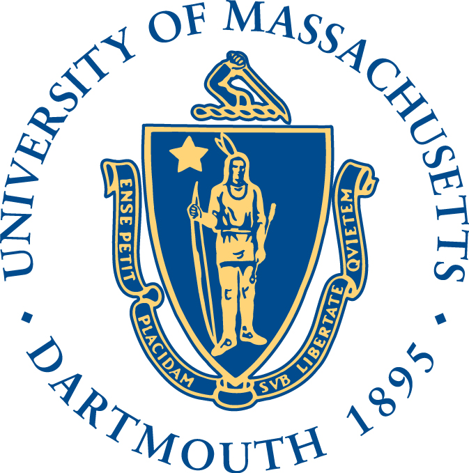

|  |
College or Arts and Science
Department of Mathematics 285 Old Westport Road North Dartmouth, MA 02747 |
Email: click here
|
New England Numerical Analysis Day 2011University of Massachusetts DartmouthDepartment of Mathematics April 16, 2011, 8:15am - 6:00pm This meeting will be the third in a series of annual, informal meetings held in the New England area focusing on numerical analysis. RegistrationIf you would like to attend, please register online, it is fast and there is no registration fee if you register by April 11, 2011.Conference Sponsor
Confirmed Invited Speakers
Student Poster SessionWe plan to have a poster session for NENAD 2011. The poster session provides a valuable opportunity for students to showcase their work. Students at all levels are encouraged to present a poster. Please indicate so on your registration if you would like to present a poster.Submissions will be accepted until April 11, but we prefer to post your poster title and abstract at this website as soon as possible. So you are encouraged to send your title and abstract to yanlai _dot_ chen _at_ umassd __dot__ edu as soon as they are available. Poster Dimension: You can prepare your poster with dimension 40 inches (101 cm) high by 30 inches (76 cm) wide or 30 by 40. Conference LocationWoodland Commons. The conference will take place in the Woodland Commons, one of the more recent buildings of the campus. You can locate it (building V) on the campus map.Accomodations & DirectionsAccommodations
Local OrganizersSteven Leon (Committee Chair), Yanlai Chen, Cheng Wang.For further information, contact us. |